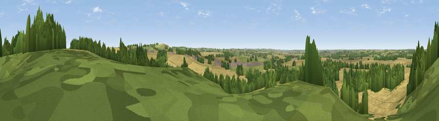

Viewpoint near Welford
#29314 in England · top 33% of its area beats it · near WelfordThe view, rendered

A 360° render of this exact spot computed from the terrain model, tree cover and land cover — summer colours, afternoon light, calibrated against photographs of famous viewpoints. Real trees, hedges and buildings will differ in detail.
The panorama
Grey silhouette: terrain skyline in each direction (720 bearings, Earth curvature and refraction included). Dashed green: skyline with trees (+15 m) and buildings (+8 m) as obstacles. Blue strip: how far the ground is visible on each bearing.
Where the view opens
Wedge length = distance to the farthest visible ground on that bearing (vegetation-aware). Rings at 10, 25 and 50 km.
What fills the view
56% cropland · 24% woodland · 19% grassland · 1% built-up
Angular shares of the visible panorama (visual magnitude), not map area. Landscape diversity 0.46 (0–1 Shannon).
Key numbers
More beautiful places nearby
The staircase of upgrades: each row has a higher view potential than everything closer. Driving times are estimates from straight-line distance, calibrated against real road routing — check an actual route before setting out.
| Place | Direction | Drive | Score |
|---|---|---|---|
| Viewpoint near Cold Ashby | SE · 2 km | ~6 min | 61.7 |
| Viewpoint near Staverton | SSW · 19 km | ~32 min | 63.3 |
| Big Hill - Staverton Clump | SSW · 19 km | ~32 min | 68.4 |
| Old John | NNW · 34 km | ~52 min | 70.3 |
| Broombriggs Hill | NNW · 37 km | ~56 min | 74.4 |
| Viewpoint near Woodhouse Eaves | NNW · 38 km | ~57 min | 77.7 |
| Viewpoint near Elmley Castle | WSW · 75 km | ~99 min | 80.5 |
| Bredon Hill | WSW · 76 km | ~100 min | 83.0 |
52.40169, -1.09124 · source: screening · position refined by local search. Computed location — check access rights before visiting.